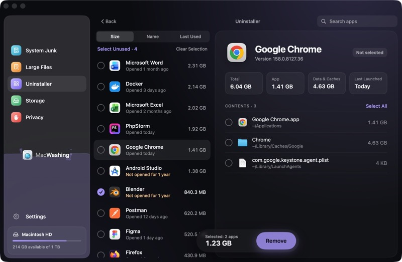
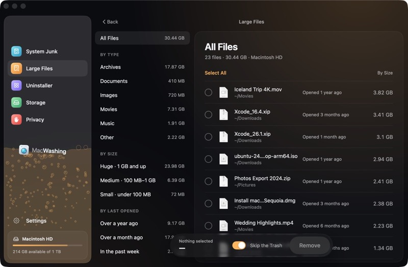
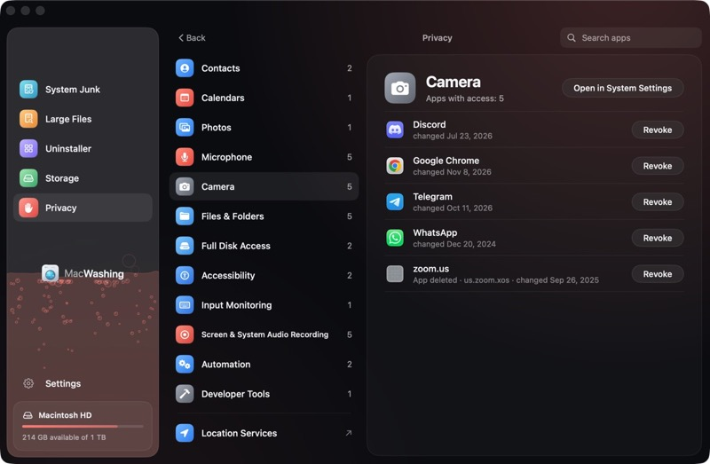
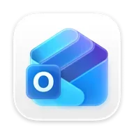

Мусор Xcode
DerivedData Xcode, данные отладки старых iOS и кэши симуляторов.
MacWashing может сохранить здоровье вашего Mac и вернуть ему былую молодость: почистит кэш и мусор, поможет найти большие файлы и освободить место на диске. Забота о вашем Mac — для этого MacWashing здесь.

Находит всё, что можно удалить без вреда для системы: пользовательские и системные кэши, журналы программ, остатки давно удалённых приложений, забытые установщики и гигабайты мусора Xcode.
Кэши программ разрастаются до десятков гигабайт.
DerivedData Xcode, данные отладки старых iOS и кэши симуляторов.
Кэш Final Cut Pro, Premiere Pro, Lightroom и других.
Образы дисков и пакеты, забытые в Загрузках.
Настройки и кэши программ, которых на Mac уже нет.
Программ и системы: для работы они не нужны.
node_modules, Pods, .venv и другие зависимости в проектах, которые вы не открывали больше 90 дней.
Кэш Final Cut Pro и Premiere Pro, превью Lightroom и кэш DaVinci Resolve — десятки гигабайт на рабочем проекте. Фото, видео и проекты остаются на месте.
Final Cut Pro · Premiere Pro · Lightroom Classic · DaVinci Resolve · iMovie
Если просто перетащить программу в Корзину, удалится она не полностью: настройки, кэши и фоновые компоненты останутся на диске. Деинсталлятор находит их и удаляет всё вместе.

Видео, архивы и образы дисков, которые вы когда-то скачали и больше не открывали. MacWashing поможет найти крупные и давно забытые файлы на выбранных дисках, а затем вы определите их судьбу.

Браузер в духе Finder, который показывает настоящий размер каждой папки. Пройдитесь по домашней папке, iCloud Drive, Корзине и всем дискам и уберите то, что больше не нужно.

Показывает, каким программам вы разрешили доступ к камере, микрофону, записи экрана, файлам, автоматизации и остальным разрешениям macOS, — и забирает доступ у тех, кому он не нужен.

Нам пришлось приложить немало сил, чтобы проверить более 930 приложений. Для каждого мы составили карту рабочих папок, проверили каждую и определили, что может считаться мусором. База открыта: её можно прочитать, проверить и предложить новые правила.




MacWashing удаляет только то, что может объяснить: каждый файл сопоставлен с известной программой или известным видом мусора.
Базу мы собираем посредством живого анализа поведения программ.
Мы не трогаем то, что может быть вам дорого. Только то, в чём твёрдо уверены.
Любую находку можно раскрыть и осмотреть перед удалением.
Включите режим удаления в Корзину, чтобы избавиться от лишних тревог.
Подождёт, пока вы закончите работу.
Сканирование идёт без интернета, ваши данные остаются у вас.
Да. Все разделы работают без ограничений, аккаунт не нужен. Код открыт под лицензией GPL-3.0: его можно прочитать, собрать самому и предложить изменения на GitHub.
MacWashing удаляет только те файлы, которые может сопоставить с известной программой или известным видом мусора из своей базы правил, и только там, где программы оставляют файлы. Стандартные системные папки и файлы Apple он не трогает. Каждую находку можно проверить и снять с неё галочку.
Без полного доступа к диску macOS скрывает от программ кэши, журналы и базу разрешений. Этот доступ нужен MacWashing, чтобы их увидеть. Всё сканируется на вашем Mac, имена и списки файлов никуда не отправляются.
По умолчанию MacWashing удаляет сразу, чтобы место освободилось в тот же момент. Если хочется возможности передумать, в Настройках ▸ «Удаление» выберите «В Корзину» — тогда всё удалённое можно вернуть, пока Корзина не очищена.
На любом Mac с macOS 14 Sonoma и новее, на Apple silicon и Intel.
Если перетащить программу в Корзину, удалится только она сама. Её настройки, кэши и фоновые компоненты останутся в папке «Библиотеки», будут занимать место, а иногда и запускаться. В MacWashing откройте Деинсталлятор и отметьте программу: всё, что она оставила, найдётся по базе правил и удалится вместе с ней.
«Системные данные» в настройках хранилища — всё, что macOS не отнесла к другим категориям: кэши, журналы, данные Xcode, локальные снимки Time Machine и другое. MacWashing удаляет кэши, журналы и мусор Xcode. Снимки и файлы самой macOS он не трогает, поэтому цифра уменьшится, но не до нуля.
Чаще всего Mac замедляется, когда на загрузочном диске почти не осталось места: macOS негде держать файлы подкачки и кэши. Очистка кэша, журналов, мусора Xcode и забытых установщиков возвращает свободное место. Если места хватает, а Mac всё равно медленный, дело скорее в нагрузке на процессор или память — это MacWashing не лечит.
Раз в день программа заглядывает на GitHub: новые версии приходят из выпусков этого репозитория, подписанные и нотаризованные Apple, а свежая база правил — из папки обновлений. И то и другое подписано, программа проверяет подписи, прежде чем что-то использовать.